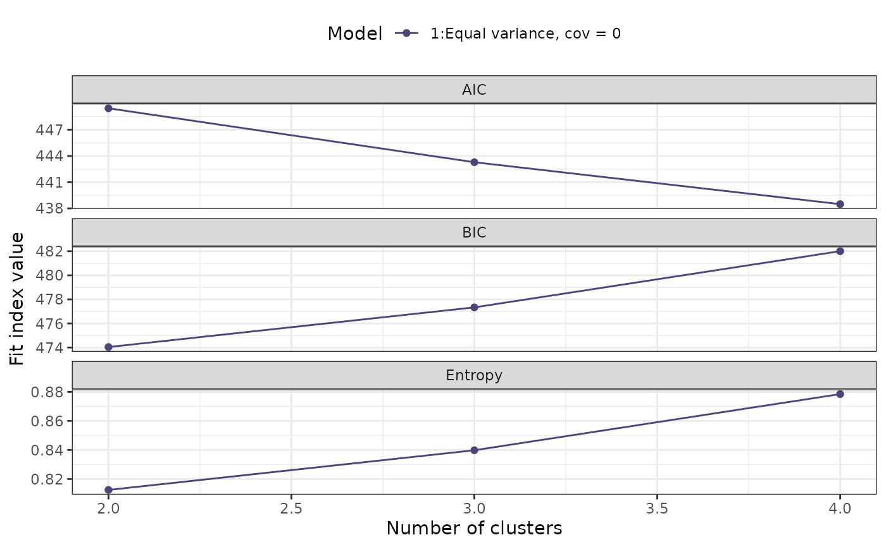
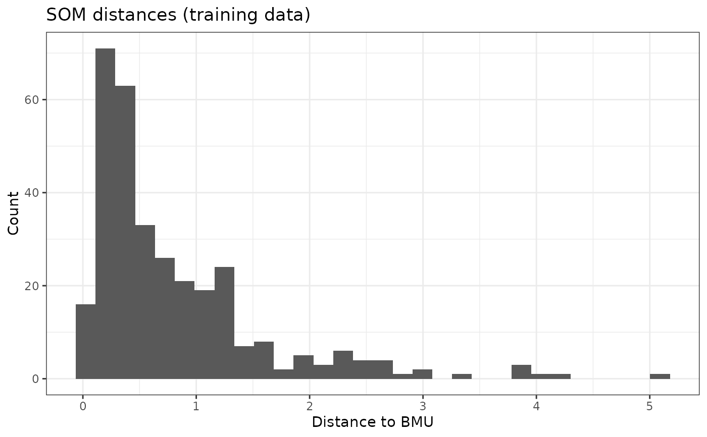
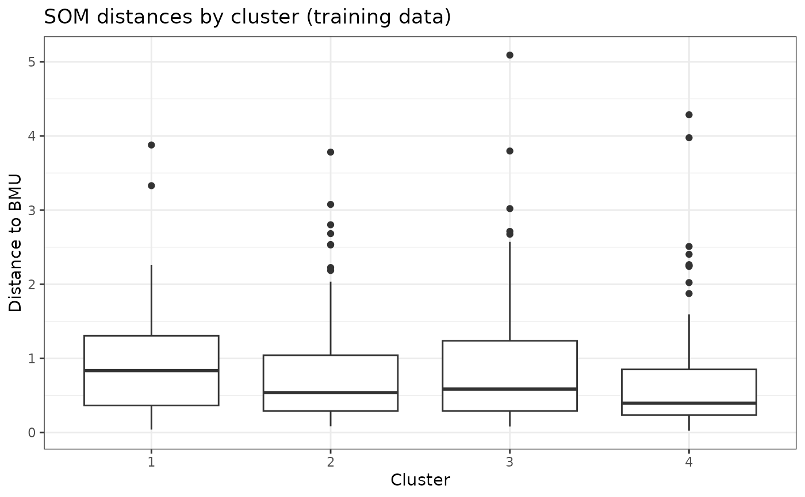
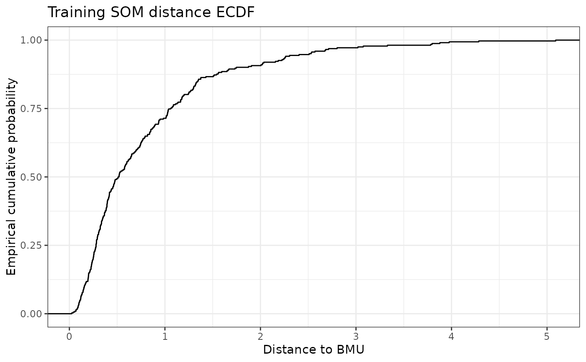
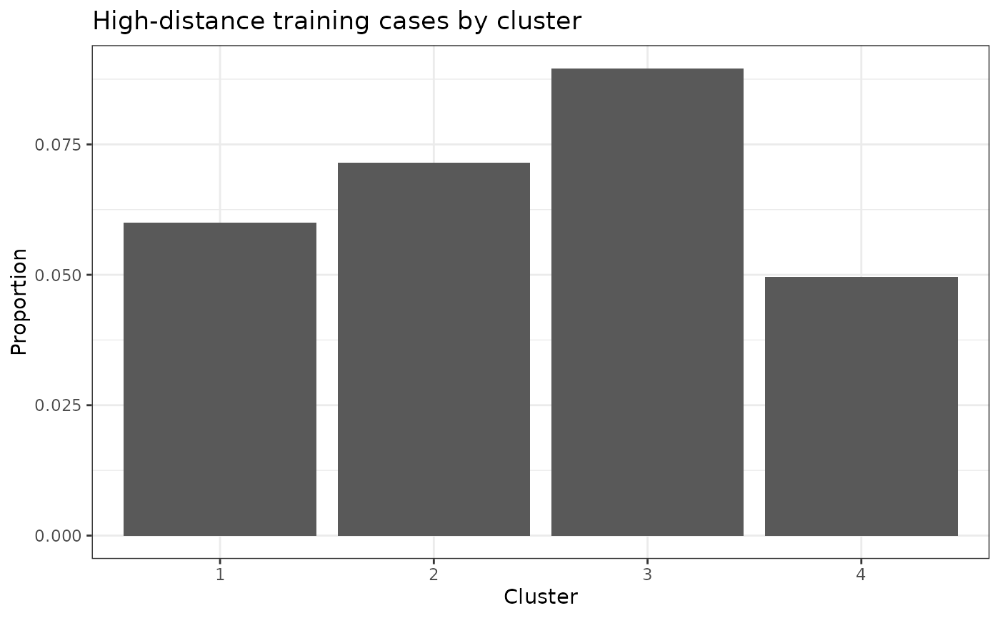
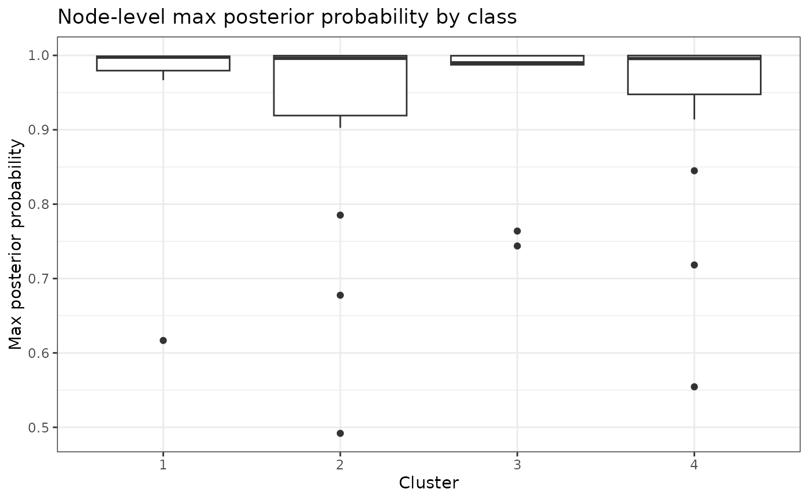
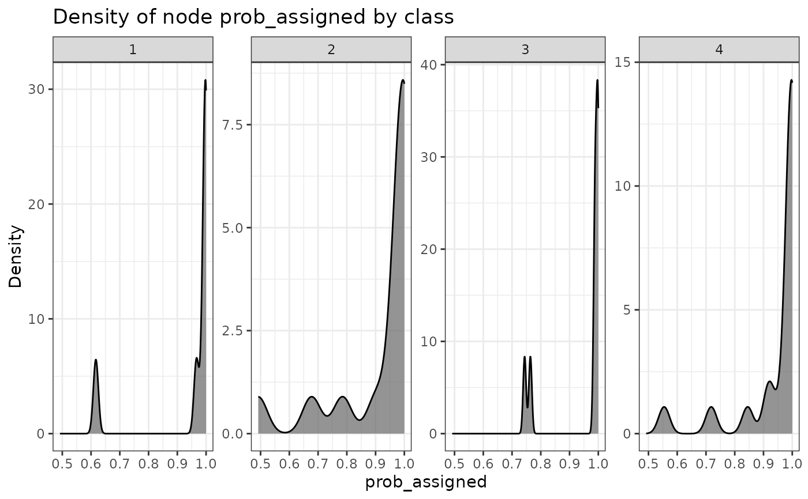
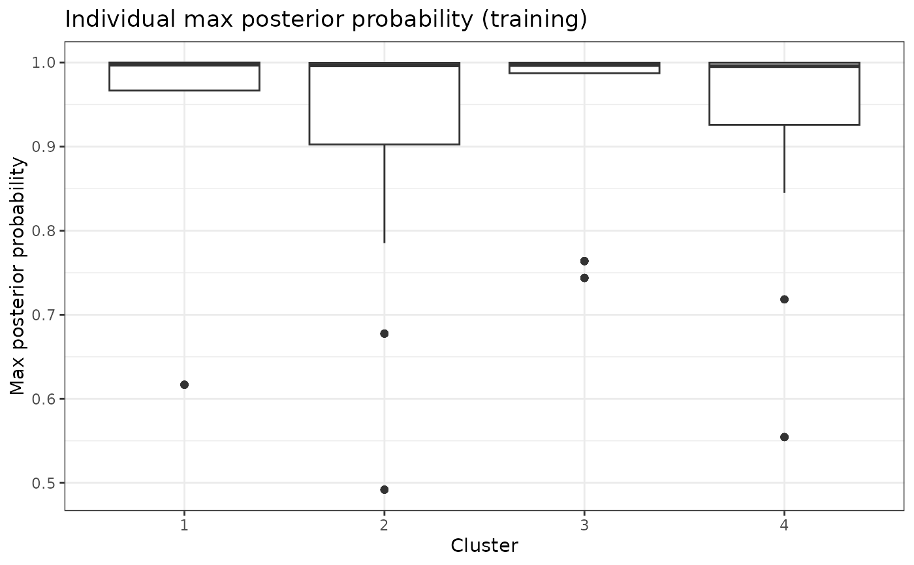
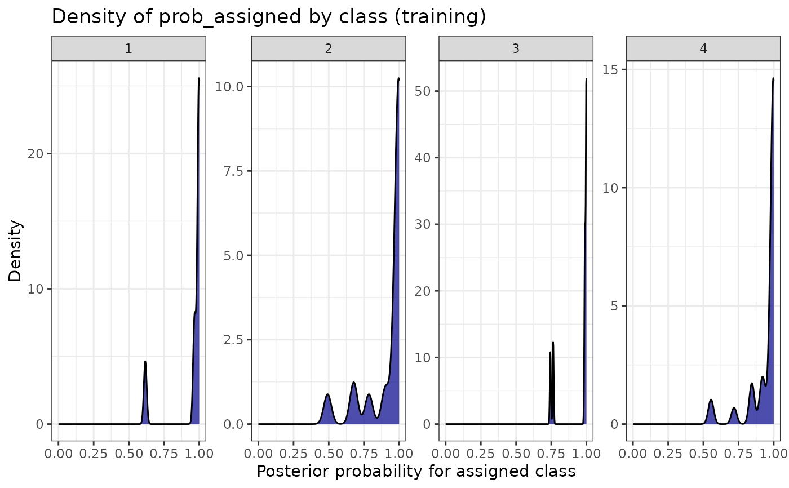

SOM + latent profile clustering pipeline (with AHP and distance baselines)
Source:R/Pipeline_SOMClust.R
CreateSOMClusterModel.RdEnd-to-end pipeline to:
Standardize variables using SciDataReportR::CreateZScoreObject() or a supplied Z-score object.
Fit a Self-Organizing Map (SOM; kohonen) on complete cases.
Generate aweSOM visualizations (Circular, Line, Cloud) with optional relabeling using variable labels from the original data frame.
Cluster SOM codebook vectors using latent profile analysis (tidyLPA / mclust backend).
In
method = "exploratory", fit a grid of models and select a recommended solution using an Analytic Hierarchy Process (AHP)-style index combining AIC, BIC, and Entropy.In
method = "finalize", fit a user-specified model and number of profiles.Map node-level clusters and posterior probabilities back to individuals.
Store training variable summaries used later to quantify whether projected cohorts fall outside the original training range.
This supports a train once, project many clinical phenotyping workflow: learn phenotype structure in a training cohort, then project new cohorts into the fixed phenotype space without reclustering.
Missing data:
SOM and clustering are fit only on rows with complete Z-scores.
The returned
df_with_clustershas the full original data with.scidr_rowidand a single cluster column appended; rows not used in SOM/LPA get NA.The returned
ProbFit$individualis also full length, preserving one row per input row with NA posterior probabilities for rows excluded from SOM/LPA.
Stable row id:
.scidr_rowidis added to the input data and carried intodf_with_clustersandProbFit$individual.ProbFit$individual$RowIDis set equal to.scidr_rowidso merges do not rely on row order.
Z-score behavior:
ZScoreType = "Center and Scale"/"Center Only"/"Scale Only"computes Z-scores fromdfviaCreateZScoreObject().ZScoreType = "ZScoreObj"projects Z-scores using an externalZScoreObjviaProjectZScore().ZScoreType = "PreZScored"uses existing Z-score columns indfas-is and does not re-zscore.
Pipeline_SOMClust() has been superseded by
CreateSOMClusterModel(). It remains available as a backwards-compatible
alias and returns the same reusable SOM clustering model.
Usage
CreateSOMClusterModel(
data,
variables = NULL,
method = c("exploratory", "finalize"),
k_range = 2:15,
models = c(1, 2, 3),
final_k = NULL,
final_model = NULL,
ClusterName = "Cluster",
ZScoreType = c("Center and Scale", "Center Only", "Scale Only", "ZScoreObj",
"PreZScored"),
ZScoreObject = NULL,
som_xdim = NULL,
som_ydim = NULL,
som_topo = "hexagonal",
som_neigh = "gaussian",
seed_som = 934521L,
seed_lpa = 93421L,
Relabel = TRUE,
ZScorePrefix = "Z_",
ZScoreVars = NULL,
id_var = NULL,
lpa_progress = FALSE,
lpa_em_itmax = 100L,
lpa_em_tol = 1e-05,
lpa_timeout_seconds = 120,
lpa_drop_zero_sd = TRUE,
lpa_zero_sd_tol = 1e-08,
skip_model_after_n_failures = 2L,
slow_fit_seconds = 120,
min_nodes_per_cluster = 5,
high_dist_quantile = 0.95,
low_prob_threshold = 0.7,
df = lifecycle::deprecated(),
id_col = lifecycle::deprecated()
)
Pipeline_SOMClust(...)Arguments
- data
Data frame containing the variables to be used in SOM and clustering.
- variables
Optional character vector of variable names. If NULL, numeric variables are auto-detected using
SciDataReportR::getNumVars(df, Ordinal = FALSE). InZScoreType = "PreZScored", this can also be NULL if you supplyZScoreVarsor if Z-score columns can be auto-detected by prefix.- method
One of
"exploratory"(default) or"finalize". In"exploratory", a grid of models is fit and AHP chooses the recommended solution. In"finalize", the user must specifyfinal_kandfinal_model.- k_range
Integer vector of numbers of clusters/profiles to consider in exploratory mode. Default
2:15.- models
Integer vector of model specifications for tidyLPA (mclust backend). Default
c(1, 2, 3).- final_k
Integer; number of profiles for
method = "finalize".- final_model
Integer; model specification for
method = "finalize"(should be one ofmodels).- ClusterName
Name of the cluster column in the output. Defaults to
"Cluster". If this column already exists indf, it is overwritten (with a message).- ZScoreType
One of:
"Center and Scale"(default)"Center Only""Scale Only""ZScoreObj"(use an existing ZScore object)"PreZScored"(use existing Z-score columns in df as-is)
- ZScoreObject
Optional ZScoreObj (from
CreateZScoreObject()orProjectZScore()) to use whenZScoreType = "ZScoreObj".- som_xdim, som_ydim
Optional integers for SOM grid dimensions. If NULL, a square grid with side length
ceiling(n_complete^(1/3))is used.- som_topo
SOM topology for
kohonen::somgrid(), default"hexagonal".- som_neigh
SOM neighbourhood function, default
"gaussian".- seed_som, seed_lpa
Integer seeds for SOM and LPA steps (defaults 934521 and 93421).
- Relabel
Logical; if TRUE (default), aweSOM plots are relabeled using variable labels from the original
df(via Hmisc or sjlabelled when available) by stripping the Z-score prefix.- ZScorePrefix
Character prefix used for Z-score columns when
ZScoreType = "PreZScored". Default"Z_".- ZScoreVars
Optional character vector of Z-score column names to use when
ZScoreType = "PreZScored". If NULL, the function attempts to infer them fromvariablesor by detecting columns starting withZScorePrefix.- id_var
Optional character scalar. If provided and present in
df, this column is carried intoProbFit$individualfor convenience.- lpa_progress
Logical; if TRUE, print short progress messages while fitting model/profile combinations.
- lpa_em_itmax
Integer; maximum number of EM iterations passed to
mclust::emControl(). Use NULL to leave mclust defaults unchanged.- lpa_em_tol
Numeric; EM convergence tolerance passed to
mclust::emControl(). Use NULL to leave mclust defaults unchanged.- lpa_timeout_seconds
Optional timeout in seconds for individual LPA fits. Use NULL to disable timeouts.
- lpa_drop_zero_sd
Logical; if TRUE, remove SOM code dimensions with near-zero standard deviation before LPA.
- lpa_zero_sd_tol
Numeric tolerance used when
lpa_drop_zero_sd = TRUE.- skip_model_after_n_failures
Optional integer; skip a model family after this many failures.
- slow_fit_seconds
Optional runtime threshold used to flag slow LPA fits in diagnostics.
- min_nodes_per_cluster
Optional minimum average SOM nodes per cluster considered before attempting a candidate profile count.
- high_dist_quantile
Numeric value between 0 and 1 used to define high SOM-distance flags from the training distance distribution. Default is
0.95.- low_prob_threshold
Numeric posterior probability threshold used to flag uncertain phenotype membership. Default is
0.70.- df
Deprecated (since 19.15.0). Use
datainstead.- id_col
Deprecated (since 19.15.0). Use
id_varinstead.- ...
Arguments passed to
CreateSOMClusterModel().
Value
A list of class "Pipeline_SOMClust" with components:
method,vars_used,ZScoreType,ZScoreObject,ZScoreVars,ClusterNamecomplete_rows: logical vector (rows used for SOM/LPA)df_with_clusters: originaldfwith.scidr_rowidand only the cluster column appendedfit_plot: ggplot of AIC/BIC/Entropy vs k and modelModelInfo_SOM: list withsom_model,som_codes,som_grid,training_variable_summary,SOMFit(distance diagnostics, baselines, and per-cluster flags),plots(aweSOM plots)ModelInfo_MClust: list withlpa_models,fit_table,AHPinformation, anddiagnosticsfor LPA warnings, failures, runtimes, and preprocessingProbFit: list withnode(node-level posterior probabilities),individual(full-length per-person mapping and probabilities, including.scidr_rowid), and probability plots
Details
The AHP-style index is computed by:
Scaling AIC, BIC, and Entropy across candidate solutions (AIC/BIC are negated so that lower values correspond to better fit; higher scaled scores are preferred).
Taking the mean of the three scaled indices. The model with the highest AHP index is recommended.
LPA model/profile combinations are fit one at a time so that failed or
warning-producing solutions are captured in diagnostics instead of blocking
the entire pipeline. Successful fits are retained and failed fits are listed
in ModelInfo_MClust$diagnostics.
Model review and refinement
Start with ModelInfo_MClust$fit_table, the AHP recommendation, and
fit_plot to compare candidate model specifications and numbers of
profiles. AHP is a useful starting point, not an automatic final decision:
retain solutions whose fit, cluster size, and clinical interpretability are
all reasonable.
The Circular and Line SOM widgets show how the analysis variables vary across
the map; the Cloud widget shows the observations within map cells. Use them
to assess whether the candidate solution represents coherent, interpretable
phenotype patterns. Inspect SOMFit$node_occupancy for empty or sparse
cells, and the SOM-distance plots for clusters with systematically poor map
representation. The posterior-probability plots in ProbFit$plots
identify uncertain node- or individual-level assignments.
If these diagnostics suggest a weak solution, reconsider the variables, SOM
grid dimensions, model family, or candidate k range and refit in
exploratory mode. Once a solution is selected, refit it with
method = "finalize", final_k, and final_model to create
the reusable model for projection.
Examples
# \donttest{
data(SampleData)
data(SampleVariableTypes)
df_Labelled <- RevalueData(SampleData, SampleVariableTypes)$RevaluedData
model <- CreateSOMClusterModel(
data = df_Labelled,
variables = c("age", "AXL", "Adiponectin", "Alpha_1_Antitrypsin"),
method = "exploratory",
k_range = 2:4,
models = 1
)
#> Registered S3 method overwritten by 'tidyLPA':
#> method from
#> print.LRT tidySEM
#> The 'variances'/'covariances' arguments were ignored in favor of the 'models' argument.
#> The 'variances'/'covariances' arguments were ignored in favor of the 'models' argument.
#> The 'variances'/'covariances' arguments were ignored in favor of the 'models' argument.
# Compare candidate model fit and use the recommendation as a starting point.
model$ModelInfo_MClust$fit_table
#> Model Classes LogLik parameters n AIC AWE BIC CAIC
#> 1 1 2 -211.7240 13 49 449.4480 562.0104 474.0417 487.0417
#> 2 1 3 -203.6415 18 49 443.2831 599.7090 477.3358 495.3358
#> 3 1 4 -196.2459 23 49 438.4919 638.7587 482.0037 505.0037
#> CLC KIC SABIC ICL Entropy prob_min prob_max n_min
#> 1 425.0730 465.4480 433.2471 -480.6433 0.8124681 0.9200487 0.9631134 0.4285714
#> 2 408.9626 464.2831 420.8510 -485.1415 0.8397871 0.8908365 0.9574807 0.1428571
#> 3 394.2488 464.4919 409.8286 -489.8897 0.8784603 0.8750868 0.9736647 0.1428571
#> n_max BLRT_val BLRT_p AIC_scaled BIC_scaled Entropy_scaled
#> 1 0.5714286 34.08176 0.00990099 -1.03907598 0.9378462 -0.9380319
#> 2 0.4693878 16.16495 0.08910891 0.08337193 0.1144578 -0.1141411
#> 3 0.3877551 14.79121 0.04950495 0.95570405 -1.0523041 1.0521730
#> ahp_index
#> 1 -0.34642054
#> 2 0.02789622
#> 3 0.31852432
model$ModelInfo_MClust$AHP$recommendation
#> [1] "AHP (AIC, BIC, Entropy) recommends Model 1 with k = 4 profiles."
model$fit_plot

# Explore feature patterns and topology in the interactive SOM widgets.
model$ModelInfo_SOM$plots$Circular
model$ModelInfo_SOM$plots$Line
model$ModelInfo_SOM$plots$Cloud
# Review map representation and high-distance training cases.
model$ModelInfo_SOM$SOMFit$plots$distance_hist

model$ModelInfo_SOM$SOMFit$plots$distance_by_cluster_box

model$ModelInfo_SOM$PhenotypeReference$plots$distance_ecdf

model$ModelInfo_SOM$PhenotypeReference$plots$cluster_fit_summary_plot

# Assess node- and individual-level membership confidence.
model$ProbFit$plots$node_MaxProbBoxplot

model$ProbFit$plots$node_ProbAssignedDensity

model$ProbFit$plots$individual_MaxProbBoxplot

model$ProbFit$plots$individual_ProbAssignedDensity

# }